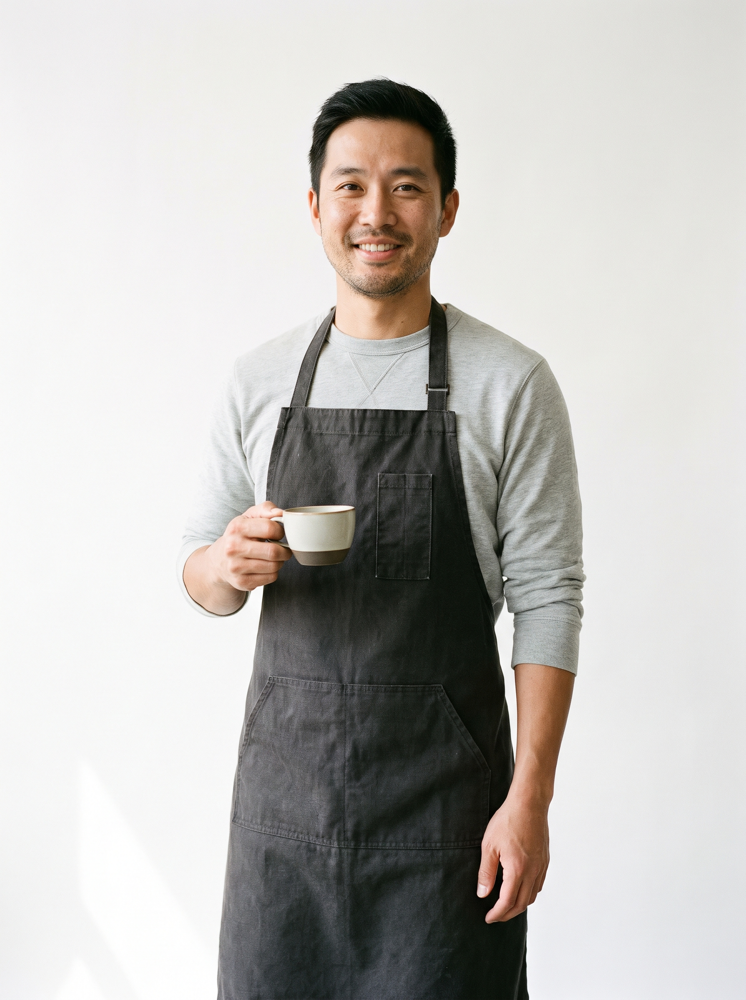
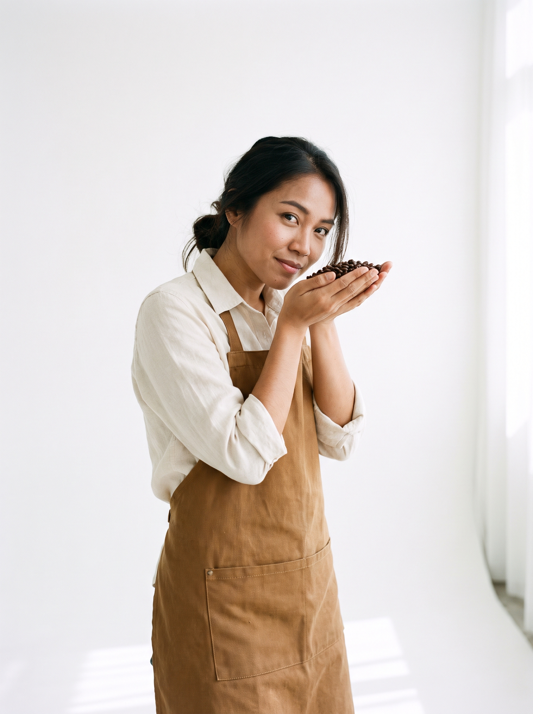
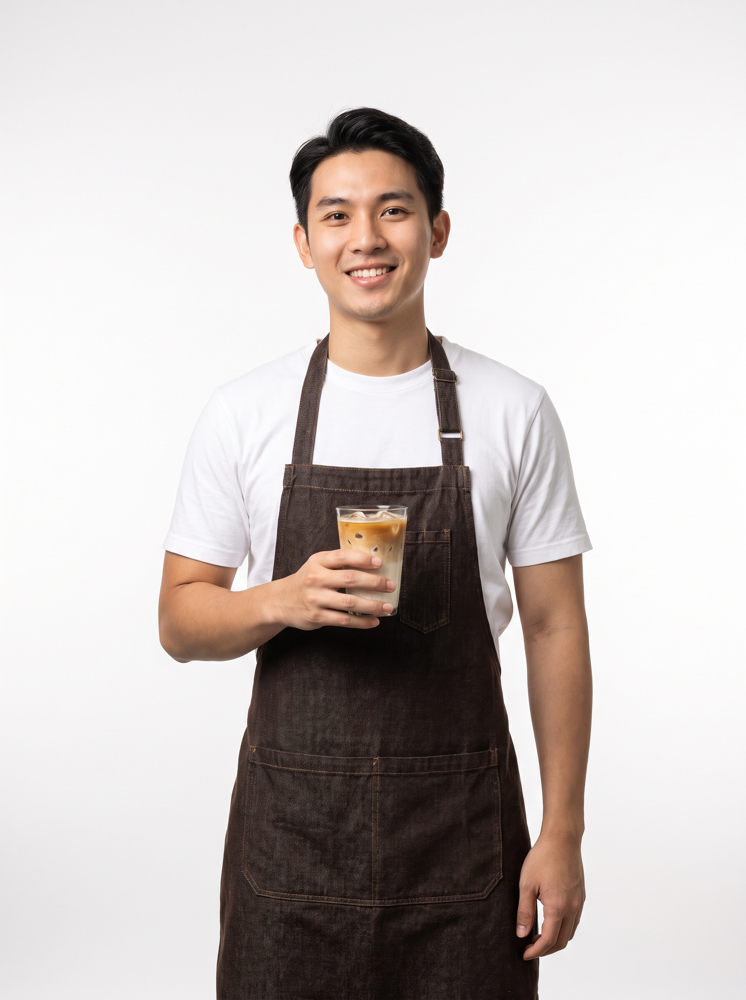

Jake Chen
Owner
Opens the shop, trains the baristas, and still works the morning shift.

Jake moved to Phnom Penh in 2021 and spent a year pulling shots at a cafe near the Russian Market. In 2023 he rented a narrow shop on Street 308 and opened Jake's Coffee with one grinder and four tables.
Most of our coffee comes from small farms in Mondulkiri. Sreymom roasts it in the back room. Out front, the team keeps things simple: a good cup, a warm pastry, and a seat if you want to stay.

Owner
Opens the shop, trains the baristas, and still works the morning shift.

Roaster
Runs the roaster in the back room and tastes every batch.

Barista
Makes most of the iced drinks and remembers regular orders.
Baker
Bakes the croissants and banana bread before we unlock the door.
Press play for a short look at Monday morning, when Sreymom roasts the week's coffee.